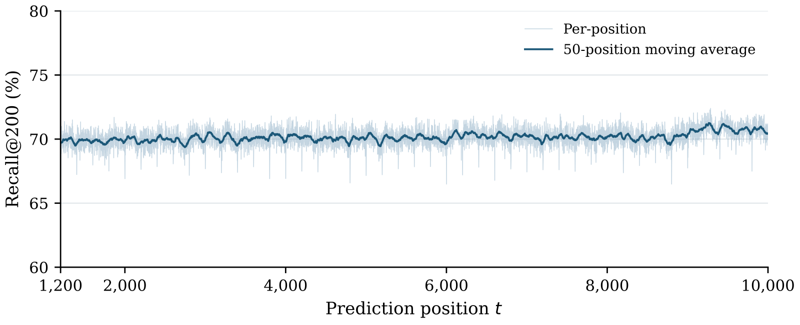
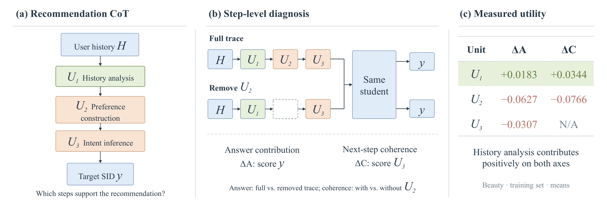
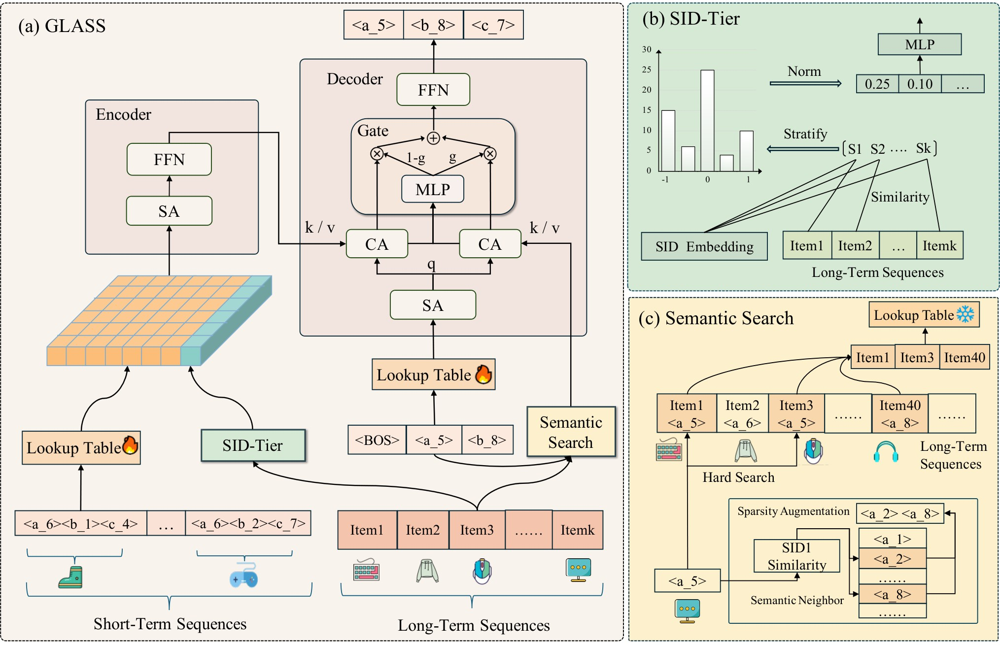
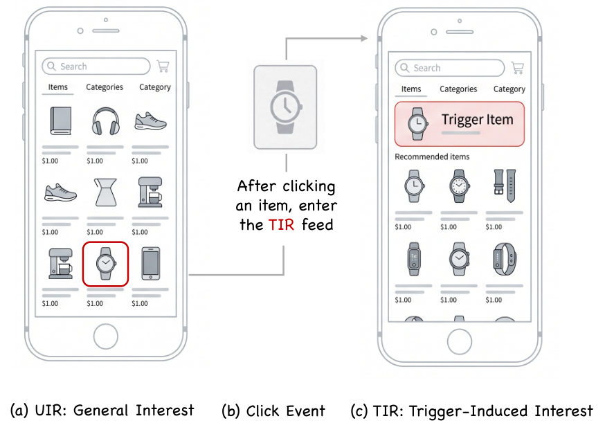

目录 · 7 节
1长历史为什么装不进解码器2RecMem 怎么把旧历史压进 16 个槽3走一遍：一个点到第 2000 次的用户4一段一段更新和打包更新，预测为什么要对齐5216 个 token 能保住多少效果6这对做生成式推荐的人意味着什么7局限点了 1 万次之后，还要把前面每一次都摊开再算一遍吗：RecMem 用 16 个格子装旧历史
你在做一个生成式推荐系统。用户每点一次，模型就把他的历史当成一段序列，直接生成下一个可能想看的物品。历史越长，越能看见那些隔了很久才再出现的偏好。历史要是全部送进 Transformer 的注意力窗口，算力和显存都会随长度涨。一个在 C2C 平台上已经点了几千次、甚至上万次的用户，下一次预测时，你还要把前面每一次点击都摊开再算一遍吗？只留最近 200 条会便宜很多。可要是他 800 次以前买过一个品牌，最近 200 次里再也没出现，这条线索就丢了。
这篇论文来自上海交通大学和阿里巴巴淘天集团，提出的方法叫 RecMem，给生成式推荐加了一块大小固定的循环记忆。现有做法里，HSTU 是 2024 年提出的 Transformer 生成式推荐骨干，可以把最近 1200 条交互一次性做全注意力，也可以跟着整段前缀一起变长，但解码时看到的 token 数会随历史涨。PersonalizedHSTU（PHSTU）把历史按段收成用户 token 和 KV 状态，存下来的状态会随保留的段摘要变多而变长。检索方法则从旧历史里挑若干条拼回最近窗口，看到的仍是历史的一个子集。RecMem 把归档历史切成每段 200 条，用带槽位遗忘门的更新把它们一段一段写入固定的 16 个记忆槽；解码器始终只看这 16 个槽加最近 200 条，一共 216 个 token。在 Mercari 电商平台的 MerRec 基准上，RecMem-Stream 保住了 HSTU-1200 的 87.9% Recall@10 和 97.0% Recall@200，超过了 PHSTU、只看最近 200 条的对照，以及同样 216 个 token 的检索基线。同一份训练好的权重，在 6442 个用户上看到第 1 万次交互，区间质量没有塌掉。
这些数字都来自 MerRec 上的 ID 推荐和 HSTU 家族骨干。
长历史为什么装不进解码器
既想用上旧历史，又不想让解码上下文跟着历史一起涨。论文把这件事写成三个要求。留下来的记忆要占常数空间，解码窗口也不随已经处理过的段数变。压缩之后，对未来交互仍要接近看完全历史时的预测能力。循环压缩每一步都会引入近似误差，误差还不能随着更新次数无界累积。
只看最近窗口，或从旧历史里检索若干条，都是在可用历史里做选择。被丢掉的交互里如果藏着对未来有用的线索，预测就会受损。PHSTU 的段摘要能把更长的历史收进来，但保留的摘要越多，用户侧存下来的 token 和 KV 就越多，空间就不是常数。还有一种做法 Rec2PM，用教师模型给出的参考状态来学压缩。RecMem 的目标是不依赖教师，直接用推荐监督来训练这块固定容量的瓶颈。
RecMem 怎么把旧历史压进 16 个槽
RecMem 把一条用户历史拆成两截。最近 200 条原样留给解码器，叫最近后缀。更早的部分叫归档前缀，再按每段最长 200 条切成 K 段，从左到右一段一段送进更新模块 U。记忆状态 M 是一张固定的表：16 行（也就是 16 个槽），每行 256 维，一开始是全零。每来一段 S_t，就做一次 M_t = U(M_{t-1}, S_t)。归档历史之后只能通过最后的 M_K 进入预测。
RecMem 是在 HSTU 上做的分叉编码器–解码器。更新模块 U 走编码路径，写出候选记忆并做门控更新；下一个物品由解码路径来预测。下层 8 个块共用，用来抓一般的序列依赖；上层各 8 个块分开，一边专管把一段历史写进记忆，一边专管根据记忆和最近窗口做预测。论文把这套默认配置叫做 SplitTop-8/8/8：一共 24 个不重复的骨干块，编码路径和解码路径各自实际走 16 层。
更新时，当前段的物品先变成 embedding E(S_t)，再配上一组学出来的查询向量 Q，一共 16 个，和上一轮记忆 M_{t-1} 拼在一起，送进共用下层和编码上层。在查询位置上读出来的表示，就是这一轮的候选记忆。同时，用这一段 item embedding 的掩码均值算出 16 个介于 0 和 1 之间的遗忘门，每个槽一个标量，再广播到这个槽的所有维。新状态里，每个槽留下门控那么多的旧内容，其余位置换成候选记忆。如果这一段全是填充位，就直接跳过，记忆保持不变。为了避免循环里数值爆掉，每个槽还要单独投影到半径为 10 的欧氏球内：范数不超过 10 时保持原值，超出时才按比例缩回 10。默认配置里，编码上层每个块的输出投影加了谱归一化；位置编码按段局部编号，不用随着历史变长去涨一个全局位置下标。
解码时，16 个槽和最近 200 条的 embedding 拼成 216 个 token，送进同一套共用下层和解码上层。最近窗口里的每个位置可以看见全部记忆槽，对窗口内部则按从左到右的因果顺序可见。最后一个位置的隐向量跟候选 item embedding 做点积，就是打分。按这个切分，任意预测时刻都是最近 200 条加剩下的全部前缀，前缀从靠近这 200 条的一侧对齐再切段，两截之间没有空隙。没有缓存时，当前前缀按段顺序压进记忆。记忆已经缓存时，新交互凑满一段，就只对这一段做一次更新，单步压缩开销不随总历史变长。

走一遍：一个点到第 2000 次的用户
下面按论文的默认配置，走一个预测位置在第 2000 次交互的用户。扩展协议会评到第 3000 次，长历史评测也会经过这个位置。门控系数是示意数字，段长、窗口和槽数都来自论文。
第一步，切分历史。用来预测第 2001 个物品时，最近后缀是第 1801 到 2000 条，共 200 条。归档前缀是第 1 到 1800 条，正好切成 9 段，每段 200 条。后面历史再涨，解码器这一侧始终是 16 个槽加 200 条，216 个 token。
第二步，从全零记忆开始写第一段。候选记忆由第一段和 16 个查询向量算出来。更新公式里旧状态是 0，所以第一轮写进去的内容等于「1 减门控」再乘上候选。即便某个槽的门是 0.8，写进去的也只是候选的 20%。然后，范数超过 10 的槽会被缩放到 10，其余槽不变，再交给下一段。
第三步，写到后面某段时，门才真正在「留旧」和「换新」之间做选择。示意：第 5 段到来时，第 3 号槽的门是 0.8，这个槽 80% 留着旧内容，20% 换成这一段的候选；第 7 号槽的门是 0.2，这个槽大部分被新内容覆盖。每个槽的门由这一段的均值 embedding 算出来，所以不同槽可以留下不同比例的旧信息。9 段走完，得到 M_9。
第四步，解码。把 M_9 和最近 200 条拼在一起。最近窗口的每个位置先看见 16 个槽，再按因果顺序看见窗口里更早的物品。最后一个位置的隐向量对候选打分。归档里的 1800 条没有一条以原始物品的形式出现在这一步，它们只活在这 16 个槽里。
第五步，看这 16 个槽到底有没有用。论文在一个维度降到 64 的模型上，推理时把 16 个槽全部置零，只留最近窗口：历史长度为 2000 时，Recall@10 从 41.35 掉到 20.23。这说明已经训练好的模型在推理时确实在用这些槽：置零之后，只靠最近窗口是不够的。
另外还有一个单独训练、只看最近 200 条的对照 HSTU-Recent-200。和这个对照比，RecMem-Stream 在标准协议上 Recall@10 高 1.433 个百分点，Recall@200 高 4.454 个百分点。再把「目标物品只在归档里出现过、最近 200 条里没有」的锚点按上次出现的远近分层，最老的 20% 那一层上，Stream 仍然比这个对照高 1.188 个百分点。这些差值说明归档里的精确物品历史，包括最老的那一层，对预测是有贡献的。
换一种写入方式会怎样。注意力写入、带温度的注意力写入，以及神经图灵机式的擦写，16 个槽之间的余弦相似度都接近 1，等于塌成同一个向量；只有带门的残差更新把槽间余弦留在 0.891，Recall@10 也高出 0.54 到 0.65 个百分点。这说明多槽记忆要先保住槽与槽之间的差别，否则 16 个槽会退化成同一个向量。槽数本身，论文在段长和窗口都改成 50 的扫描里试过 8、16、32，16 个槽在四个指标上都最好，Recall@10 比 8 个槽高 1.86 个百分点。这组扫描和主实验的段长不同，不能直接跟主表的绝对分数比；在试过的档位里，槽越多并不对应更高的分数。
一段一段更新和打包更新，预测为什么要对齐
记忆是一段一段更新的。训练时还有另一种算法：把相邻两段拼成一次更新。如果更新算子完全可结合，两种算法会写出同一份记忆。实际上一段一段近似会引入误差。
论文加了一项流一致性损失。从倒数第三段之后的状态出发，顺序分支对最后两段各做一次更新，打包分支把两段拼起来一次更新。打包时，位置编号在两段里各自从 0 数到 199，再用因果掩码让第二段能看见第一段。两边用同一个最近窗口解码，然后用 KL 散度让顺序分支的推荐分布去靠近打包分支，打包分支不回传梯度。只拿最后两段，是为了让这股梯度靠近预测，同时打包时的编码长度不至于太长。完整损失是主推荐损失——在最近窗口上做噪声对比估计，正样本是往后错开一位的真实下一项，再配上从物品池里抽的负样本——加上 0.05 倍的这项 KL。
这项损失对齐的是推荐分布。两份不同的记忆，解码出的分布仍可以很接近。训练用的还只是最后两段这个局部代理。论文在两条假设下给出了一个不随段数变大的状态差上界：更新对旧记忆的敏感度有一个小于 1 的上界，换一种分段方式造成的状态差也有界。从全零出发处理完 K 段后，顺序状态和一次性打包状态的差不超过「半群间隙除以 1 减收缩系数」。假设有没有在训练后的模型上成立，要另看诊断。 Hoot 说
示意：仍用正文里那个点到第 2000 次的用户，归档前缀 9 段、每段 200 条。正文走一遍讲的是这 9 段如何写入 16 个槽再解码。这里只看倒数两段：从第 7 段之后的同一份记忆出发，顺序更新和打包更新会写出两份记忆，预测靠近并不等于这两份记忆靠近。ρ=0.6、ε=0.1 只用来心算上界。
同一份 M_7 → 顺序两次更新或打包一次更新 → 同一最近窗口上的 p_seq 与 p_pack → KL 只回传到顺序分支 → 预测靠近不等于状态靠近，上界另要假设
- 第 7 段之后的记忆 → 两条更新路径9 段里的前 7 段已经写成同一份记忆，两条路径都从这里出发。顺序分支对第 8、第 9 段各做一次更新；打包分支把这两段拼成一次更新，位置编号在两段里各自从 0 数到 199，并用因果掩码让第二段能看见第一段。7 × 200 = 1400，两路都从第 1400 条之后开始
- 两份记忆、同一最近窗口 → p_seq 与 p_pack两边都用第 1801 到 2000 条这个最近窗口，加上各自刚写出的记忆，在同一组候选上解码，得到两个推荐分布 p_seq 和 p_pack。解码上下文仍然是 16 个槽加 200 条。16 + 200 = 216 个 token
- p_pack → p_seq（KL，打包分支截断梯度）流一致性损失用 KL 散度让顺序分支的分布去靠近打包分支，打包分支不回传梯度，所以被教的是顺序更新如何接近打包路径的预测，打包路径本身不顺着这股梯度改。完整损失还要加上 0.05 倍这项 KL。L = L_main + 0.05 × L_stream
- 预测分布接近 ↛ 记忆状态接近这项损失对齐的是推荐分布，而两份不同的记忆解码出的分布仍可以很接近，所以把 p_seq 拉向 p_pack 并不等于把两份记忆拉到一起。若直接约束两份记忆的距离，那会是另一条监督，论文没有用这条来训练。
- 收缩性、半群间隙 → 不随段数变大的状态差上界状态差上界要另两条假设：更新对旧记忆的敏感度有一个小于 1 的上界 ρ，换一种分段方式造成的状态差有界，记作 ε。示意取 ρ=0.6、ε=0.1 时，上限是 0.25 且和段数无关，训练只用最后两段当局部代理时这个示意上界是 0.16，走到正文里的 9 段已经是 0.247，靠近上限。0.1/(1−0.6)=0.25；K=2 时 0.16，K=9 时 0.247
这些 ρ、ε 只用来看上限怎么随段数靠近，不能当成训练后的模型已经满足假设。

出处
论文 §3.4 流一致性损失与 Theorem 1。正文走一遍里那个预测位置在第 2000 次、归档 9 段的用户被复用。ρ=0.6、ε=0.1 及上界 0.16、0.247、0.25 是示意数字。216 个 token 能保住多少效果
标准协议在每个用户第 1200 到 1999 次交互上做下一项预测，训练只用到前 1200 次。表里的 RecMem-Main 只训练主推荐损失；RecMem-Stream 是在同一套结构上再加流一致性损失，也就是让顺序更新和打包更新的预测对齐。Recall@k 表示正确答案是否落在前 k 个推荐里，NDCG@k 还会看它排得有多靠前。主结果如下。
| 方法 | 解码 token 数 | Recall@10 | Recall@50 | Recall@200 |
|---|---|---|---|---|
| HSTU-1200 | 1200 | 48.18 | 63.88 | 74.44 |
| HSTU-FullPrefix | 随 t 变长 | 48.98 | 65.64 | — |
| PHSTU | 215–227 | 32.74 | 48.58 | 61.10 |
| HSTU-Recent-200 | 200 | 40.93 | 56.59 | 67.74 |
| Ret-HSTU-16 | 216 | 41.03 | 57.54 | 68.84 |
| RecMem-Main | 216 | 42.27 | 59.95 | 71.96 |
| RecMem-Stream | 216 | 42.36 | 60.12 | 72.20 |
相对 HSTU-1200，RecMem-Stream 的解码上下文是 HSTU-1200 的 1/5.6。截断越大，相对差距越小，论文把它读成：压缩记忆留下了大部分预测信号，丢掉的更多是最靠前的排序精度。和会随前缀变长的 HSTU-FullPrefix 比，它分别保住 86.5%、91.6%、82.8% 的 Recall@10、Recall@50 和 NDCG@10。对 PHSTU 的优势是 Recall@10 高 9.622 个百分点、Recall@200 高 11.096 个百分点。检索基线 Ret-HSTU-16 已经比只看最近 200 条好，说明归档里确实有有用信号；RecMem-Stream 在 Recall@10、Recall@50、NDCG@10、Recall@200 上还再高出 1.332、2.575、0.210、3.357 个百分点。表中展示值经过四舍五入，这些差值按未四舍五入的分数计算。
会不会只是参数多了？SharedStack-16 让更新和解码共用同一条 16 层骨干，参数 327.283M，和 PHSTU 的 327.217M 接近，Recall@10 仍有 41.568，Recall@200 有 70.556。把分叉缩小成 SplitTop-6/5/5（16 个不重复块），Recall@10 是 42.055。这说明在参数数量接近时，对 PHSTU 的优势仍然在。默认的 SplitTop-8/8/8 再多一点，到 42.362 和 72.196。
流一致性在种子 42 和 123 上都抬高了四个指标，Recall@10 分别高 0.089 和 0.813 个百分点。训练时更早的段仍会经当前更新模块写入记忆，但不回传梯度，状态会从计算图上断开；带梯度的滚动段数再从 1 逐步加到 5，总段数保持固定。在消融设定里，这把 Recall@50 提高了 1.83 个百分点。这两项都说明，训练怎么对齐两种更新顺序、滚动多长，会影响到最终分数。
扩展协议看到第 3000 次时，RecMem-Stream 的 Recall@10 是 41.58，Recall@200 是 70.96，约为同期 HSTU-1200 的 96%。这说明把评测窗口拉到训练长度的 2.5 倍，固定 216 个 token 仍然能保住大部分 Recall@200。
再把同一份 RecMem-Stream 权重拿到 6442 个用户上，一直评到第 1 万次，不重新训练，记忆仍是 16 个槽。四个区间里，Recall@10 在 40.519 到 40.689 之间，Recall@200 在 69.867 到 70.379 之间。分两次跑到 5 千和 1 万，重叠的 3800 个位置分数完全一样。这说明在这组用户和这段观察窗口里，同一份权重的区间质量没有塌掉。

论文还写到，在这组用户和这段窗口里，没有容量饱和、长期遗忘或更新误差堆积的经验迹象。这组数字度量的是推荐指标，状态空间上界是否成立，这里看不出来。
计算基准用随机初始化的结构和合成物品 ID，在单卡 bfloat16 上测，不含数据读取、网络、远程状态存储和调度。批次 64、历史 2000 时，RecMem 的热预测延迟是 7.653 毫秒，每用户只保留 8 KiB 状态；PHSTU 是 9.245 毫秒和 432 KiB；HSTU-1200 是 106.613 毫秒，不保留循环状态。这说明在这份模型计算基准里，固定 16 个槽把单用户状态压到了 8 KiB，热预测也更短。测量范围停在模型计算，不含端到端在线服务。
这对做生成式推荐的人意味着什么
如果解码上下文已经被历史长度卡住，先把归档历史收进一份固定大小的记忆，再用推荐损失直接训练这个瓶颈，是一条已经在 MerRec 上能量化权衡的路。
可以先量两件事。一是只看最近窗口会丢掉多少：把「目标物品只在更早的历史里出现过」的样本单独拉出来，看现有模型比最近窗口对照差多少。二是线上为每个用户缓存的状态有没有随历史变长。如果已经在用 PHSTU 这类按段保留摘要的方法，状态会随保留的段摘要数量增长；换成 RecMem 这样固定槽数的循环更新，单用户记忆状态大小不随历史变长。写入方式上，先检查多个槽是不是已经塌成同一个向量。训练时，滚动段数从短加到长，以及让「一段一段」和「两段打包」的预测靠近，都是论文里有正向贡献的配置，可以在自己的骨干上单独做对照。
局限
评估只做了 MerRec 上的 ID 推荐，骨干都在 HSTU 家族里。固定的状态大小和解码上下文来自结构设计本身；预测信号能保住多少，只覆盖到论文评过的历史长度。状态差上界依赖收缩性和近似半群一致性两条假设。1 万次交互的实验只用了一份 Stream 权重、一组固定用户；Main 和 Stream 的成对比较只有两个种子。系统数字量的是模型计算，不含生产服务开销。作者复现 Rec2PM-O 没有得到可靠的定量比较，所以文中不对它声称经验上更优。
读完这篇，你觉得
夜读鸮记下了，谢谢你的反馈。
点一下即可，无需登录；再点一次撤回。只统计匿名次数，不记录你是谁。
相关论文RELATED
 Generative · 2026-11-02PFA: Attention Can Be Progressively Focused in Long-Sequence Generative Recommendation阿里的作者发现，生成式推荐做 beam 解码时，越往后注意力越集中在少数几条历史行为上，而且哪些行为重要，前后几步基本不变。据此提出的 PFA 把挑选重要历史这件事，从每步、每条 beam 各挑一次，改成整个解码只挑一次。它在解码第一步照常看完整历史；到第二步，把各条 beam 对历史的注意力按生成概率加权汇总，排出一份共用的重要行为排名，后面每步保留的行为数按固定比例缩小。在电商广告平台的线上 A/B 中，用户历史从 128 条加长到 512 条，收入提升 3.76%。响应时间仍比直接读完整历史更短。
Generative · 2026-11-02PFA: Attention Can Be Progressively Focused in Long-Sequence Generative Recommendation阿里的作者发现，生成式推荐做 beam 解码时，越往后注意力越集中在少数几条历史行为上，而且哪些行为重要，前后几步基本不变。据此提出的 PFA 把挑选重要历史这件事，从每步、每条 beam 各挑一次，改成整个解码只挑一次。它在解码第一步照常看完整历史；到第二步，把各条 beam 对历史的注意力按生成概率加权汇总，排出一份共用的重要行为排名，后面每步保留的行为数按固定比例缩小。在电商广告平台的线上 A/B 中，用户历史从 128 条加长到 512 条，收入提升 3.76%。响应时间仍比直接读完整历史更短。 Generative · 2026-11-16ReSID: Rethinking Long-Tail Retrieval in Generative Recommendation through Item Reachability生成式推荐把商品编成一串 Semantic ID，再用 Beam Search 逐位生成，冷门的长尾商品很难被召回。作者把从编码到解码再到匹配的整条链路拆开查，发现长尾商品多半在解码早期就丢了：在 Amazon Industrial 上，才生成两位 token，62.5% 的长尾目标就已经掉出 beam。他们还发现，把向量切成几段各自量化的并行 SID，比逐层量化残差的串行 SID 更照顾长尾，因为某一位出错不会连累后面几位，生成得不完全对的序列里仍留着有用的位。ReSID 据此在 Beam Search 里压低热门偏置、加入用户语义打分，让长尾前缀活下来，最后允许部分位对不上也能匹配到商品。它已在线上服务主流量，广告收入提高 1.3%，长尾曝光占比提高 4.0%。长尾召回的瓶颈常常在解码时被剪掉，事后放宽匹配补不回来。
Generative · 2026-11-16ReSID: Rethinking Long-Tail Retrieval in Generative Recommendation through Item Reachability生成式推荐把商品编成一串 Semantic ID，再用 Beam Search 逐位生成，冷门的长尾商品很难被召回。作者把从编码到解码再到匹配的整条链路拆开查，发现长尾商品多半在解码早期就丢了：在 Amazon Industrial 上，才生成两位 token，62.5% 的长尾目标就已经掉出 beam。他们还发现，把向量切成几段各自量化的并行 SID，比逐层量化残差的串行 SID 更照顾长尾，因为某一位出错不会连累后面几位，生成得不完全对的序列里仍留着有用的位。ReSID 据此在 Beam Search 里压低热门偏置、加入用户语义打分，让长尾前缀活下来，最后允许部分位对不上也能匹配到商品。它已在线上服务主流量，广告收入提高 1.3%，长尾曝光占比提高 4.0%。长尾召回的瓶颈常常在解码时被剪掉，事后放宽匹配补不回来。 Generative · 2026-11-09RecGroupMemory: Feedback-Aware Cohort Memory for E-Commerce Recommendation用大模型规划推荐流程时，如果希望它参考某类人群过去表现的记忆，就有一个难题：第二天有了新的成交反馈，建议要改，但人群定义、观察窗口和统计数字这些记录不能被模型顺手改掉。RecGroupMemory 把记忆拆成两层，一层是只读的观测记录，一层是画像和建议，前一天的反馈只允许改后一层，改完还要校验观测记录没变，不通过就保留原记录。在电商平台购买力较低、由业务方选定的用户上做线上对比，只加人群记忆的一组，成交用户数比无记忆基线多 1.58%；再加反馈修订的另一组，比它自己的无记忆基线多 1.78%。
Generative · 2026-11-09RecGroupMemory: Feedback-Aware Cohort Memory for E-Commerce Recommendation用大模型规划推荐流程时，如果希望它参考某类人群过去表现的记忆，就有一个难题：第二天有了新的成交反馈，建议要改，但人群定义、观察窗口和统计数字这些记录不能被模型顺手改掉。RecGroupMemory 把记忆拆成两层，一层是只读的观测记录，一层是画像和建议，前一天的反馈只允许改后一层，改完还要校验观测记录没变，不通过就保留原记录。在电商平台购买力较低、由业务方选定的用户上做线上对比，只加人群记忆的一组，成交用户数比无记忆基线多 1.58%；再加反馈修订的另一组，比它自己的无记忆基线多 1.78%。
Generative · 2026-11-10Rethinking Latent Reasoning for Generative Recommendation: Beyond Teacher-Generated CoT and Recurrent Hidden-State Feedback生成式推荐若要在中间做潜在推理，通常得先让老师模型写出思维链，成本高，也不容易稳定。这篇论文不再生成老师轨迹，而是先用固定的稀疏编码器把历史商品描述编成可缓存的词汇特征，再把同一用户见过的商品特征汇总成一个多热语义目标；训练时用浅层线性头，让插在历史和目标商品编码之间的推理 token 的隐状态去预测这个目标。这些目标只依赖历史上见过的商品，不会偷看下一个要预测的物品。只做监督微调时，方法在四个推荐基准上超过所比较的基线；在 Beauty 上，相对 MiniOneRec，NDCG@1 提高了 20.6%，NDCG@5 提高了 10.3%。对照实验表明，增益来自与输入对齐的历史语义监督，而不是多出来的 token 本身。 Generative · 2026-10-28LoopGR: Parameter-Efficient Scaling for Generative Recommendation via Recurrent Depth生成式推荐想变强通常就是加层，也就是加参数和显存。腾讯的 LoopGR（一种循环复用解码器的生成式推荐结构）让同一个解码器反复跑好几遍。每两遍之间，把解码器开头 BOS 位置的隐状态（概括模型此刻对目标的判断）加到历史的每个位置上，再用一个很小的 GRU 沿物品顺序重写历史表示。解码器反复修正预测，历史跟着预测一起变。同等计算量下，它用一半左右的参数就胜过编码器—解码器结构；工业数据上 Recall@10 为 0.6458，高于线上模型 BARGE 的 0.6277。
Generative · 2026-10-28LoopGR: Parameter-Efficient Scaling for Generative Recommendation via Recurrent Depth生成式推荐想变强通常就是加层，也就是加参数和显存。腾讯的 LoopGR（一种循环复用解码器的生成式推荐结构）让同一个解码器反复跑好几遍。每两遍之间，把解码器开头 BOS 位置的隐状态（概括模型此刻对目标的判断）加到历史的每个位置上，再用一个很小的 GRU 沿物品顺序重写历史表示。解码器反复修正预测，历史跟着预测一起变。同等计算量下，它用一半左右的参数就胜过编码器—解码器结构；工业数据上 Recall@10 为 0.6458，高于线上模型 BARGE 的 0.6277。
Generative · 2026-10-24Coarse-to-Fine Long-term Interest Modeling for Generative Recommendation生成式推荐一个码一个码地生成下一个物品的 Semantic ID，注意力计算量随序列长度平方增长，所以这类模型通常只吃最近几十条行为，用不上长期历史。GLASS 按 Semantic ID 的层级分开用长期历史。生成第一层码之前，它给每个一级码取该类物品向量的平均当原型。再把余弦相似度区间等分成若干档，统计长期历史里和原型的相似度落在每一档的物品数，所有一级码的计数拼起来经一个小网络压成一个兴趣 token 送进编码器；第一层码生成之后，拿它当检索键，从长期历史里取出同一大类的物品，辅助生成后两层码。在 TAOBAO-MM 上，R@1 比最强基线高 21.57%；短视频平台两周 A/B 中，召回率绝对提升 3 个百分点。
Generative · 2026-11-16TriGen: A Generative Paradigm for Trigger-Induced Recommendation用户在主信息流里点了一件商品，马上进入跟着它展开的推荐流，这在电商里很常见。这时推荐既要接住刚才这一下点击的意图，又不能把用户长期的口味全丢掉。生成式推荐默认顺着历史往下续写 SID，一次点击很容易被长历史冲淡，传统的判别式打分又没法指导逐个 token 的生成。阿里国际的 TriGen 把被点的商品复制几份接在历史末尾，让它主要改写最近的行为，再用门控按请求决定这次更听点击还是更听历史，并在解码每一位时都持续注入点击信号。在东南亚六个国家的线上实验里，收入提高 3.27%，GMV 提高 0.90%，现已全量上线。点击触发的推荐里，难点是这次点击该压过历史多少，而且每次都不一样。 Generative · 2026-11-11TS-GEAR: Taobao Shangou GEnerative Ad Retrieval外卖搜索里，送不到用户当前位置的商家不是排得低，而是根本不能出现。常见的 SID 只由内容和协同信号生成，最多把位置当软信号，于是送不到的商家要等生成完才被过滤，白白占掉 beam，这一步也进不了端到端训练。淘宝闪购的 TS-GEAR 把位置写进商家 ID：前三个 token 来自地理网格编码，后三个才是内容语义，解码时前两个 token 直接限定在用户所在格子和周围八格。在线上用的检索半径下，它前 50 个候选有 95.8% 送得到，最强基线 OneLoc 只有三成多。事后过滤也能删掉不合格的商家，但留下的顺序没学过位置。线上 A/B 实验里广告收入提升 4.2%。做本地生活检索的人可以把这类硬约束直接写进 ID 结构，让模型学的是可达范围内怎么排序。
Generative · 2026-11-11TS-GEAR: Taobao Shangou GEnerative Ad Retrieval外卖搜索里，送不到用户当前位置的商家不是排得低，而是根本不能出现。常见的 SID 只由内容和协同信号生成，最多把位置当软信号，于是送不到的商家要等生成完才被过滤，白白占掉 beam，这一步也进不了端到端训练。淘宝闪购的 TS-GEAR 把位置写进商家 ID：前三个 token 来自地理网格编码，后三个才是内容语义，解码时前两个 token 直接限定在用户所在格子和周围八格。在线上用的检索半径下，它前 50 个候选有 95.8% 送得到，最强基线 OneLoc 只有三成多。事后过滤也能删掉不合格的商家，但留下的顺序没学过位置。线上 A/B 实验里广告收入提升 4.2%。做本地生活检索的人可以把这类硬约束直接写进 ID 结构，让模型学的是可达范围内怎么排序。
讨论
欢迎补充实验细节、复现经验或不同看法。需 GitHub 登录。
正在加载讨论…